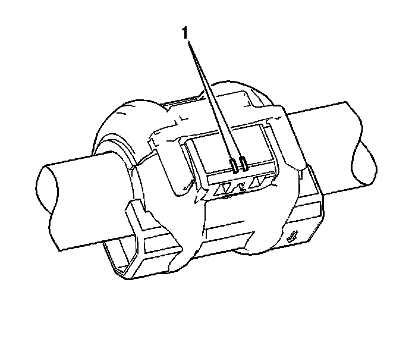
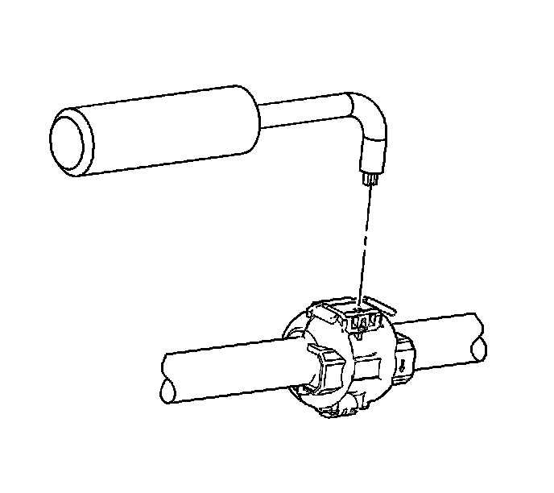
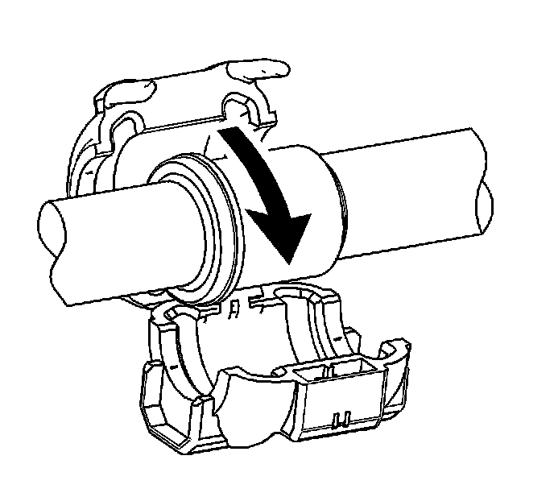
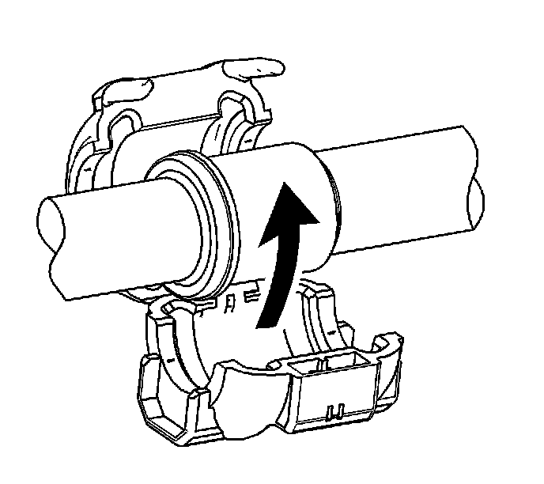

Air Conditioning Line/Tube Connector Removal/Replacement
Air Conditioning Line/Tube Connector Removal/Replacement
Tools Required
* J 39400-A Halogen Leak Detector
* J 45689 A/C Quick Joint Tool
Removal Procedure
1. Recover the refrigerant from the A/C system. Refer to Refrigerant Recovery and Recharging (Refrigerant Recovery and Recharging) .

2. Locate the A/C quick connect fitting locking tab access slots (1).
Important: The J 45689 should be parallel with the quick connect fitting.

3. Carefully insert J 45689 into the locking tab access slots.
4. Gently press down on the locking tab until the quick connect fitting locking tab releases.

5. Open and remove the quick connect fitting from the A/C refrigerant component.
Installation Procedure

Important: Inspect the A/C quick connect fitting locking tab for damage or wear. Replace the A/C quick connect fitting if any conditions exist.
1. Install the A/C quick connect fitting to the A/C refrigerant component.
Important: Ensure that the A/C quick connect fitting is latched securely to the A/C refrigerant component.
2. Close the A/C quick connect fitting .
3. Evacuate and recharge the A/C system. Refer to Refrigerant Recovery and Recharging (Refrigerant Recovery and Recharging) .
4. Leak test the fittings of the component using J 39400-A .